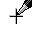

(From the main menu, choose Region->Region or Fixed Region or Full Screen)
You should set the Input Region before recording. This allows you to define the area and type of video capture. From the main menu, choose Region. There are a few types of regions you can choose:
Before recording starts, you can define an arbitrary rectangular region with the mouse. The cursor turns into a pen on cross-hairs, which you use to define a rectangular region on your screen by click-dragging the left mouse button.


You can capture a fixed-size rectangular region. A dialog allows you to define the size of the region in pixels.
If the Fixed Top-Left Corner checkbox is not selected, before the recording starts, you can move the fixed-size region around the screen to determine where you want the input area to be. To cancel recording, you can click the right mouse button.
If the Fixed Top-Left Corner checkbox is selected, recording will start immediately when the Record Button  is clicked. The region of capture is specified by the Left, Top, Width and Height values of the dialog above.
is clicked. The region of capture is specified by the Left, Top, Width and Height values of the dialog above.
If the Drag Corners to Pan checkbox is selected, you can drag either one of the four corners of the recording region (indicated by the flashing rectangle) with your mouse during recording. The mouse cursor will change to a four-pointed arrow when it is over one of the corners. When this happens, click and drag the region to the new location.
A particular window is captured.
The entire computer screen is captured.